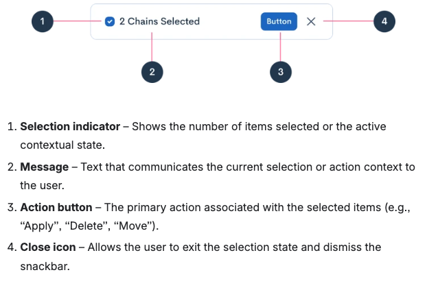

Snackbar
Figma: 10489-53696
The Snackbar is a persistent, contextual action bar that appears at the bottom of the screen when users select items or enter a multi-action state. It provides immediate access to relevant bulk actions and remains visible until the user exits the selection mode or manually dismisses it.
Anatomy

- Selection indicator — Shows the number of items selected or the active contextual state (e.g. check in a primary circle).
- Message — Communicates the current selection or action context (body text, 16px).
- Action — Primary action for the selection (e.g. Apply, Delete, Move). Light: primary solid; Dark: neutrals gray-700 fill.
- Close — Exits the selection state and dismisses the snackbar (icon control, 24px target).
Usage
- Use when the interface enters a selection state or when a group of items needs contextual bulk actions.
- The snackbar stays visible until the user completes the flow or closes it manually.
- Do not use for ephemeral alerts or notifications — use Alert or Toast.
- Avoid blocking critical UI: keep it docked to the bottom and clear of essential controls; adjust spacing on small viewports.
- When there are several actions, keep the set small and clear.
Variations
- Light — For light interfaces: white surface,
neutrals-gray-400border. - Dark — For darker layouts or stronger separation:
neutrals-blacksurface and border, white message text.
Light
Dark
Behavior
- Shown only when a selection or contextual state is active (e.g. multi-select in a table).
- Fixed to the bottom of the viewport; persists until the state is cleared — no auto-dismiss.
- Copy should update live as counts change (e.g. “3 items selected”). Use
aria-live="polite"on the message when values change. - Close exits selection mode and resets state in your app logic.
- Position with
.snackbar-dockso the bar stays centered with horizontal insets and doesn’t swallow clicks behind it (pointer-eventspattern).